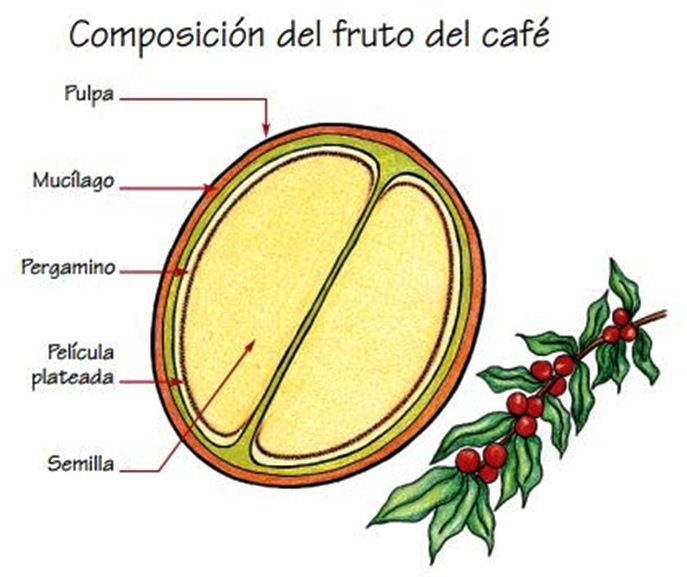

¿Qué es el café?
Aunque se trata de un concepto ampliamente conocido, antes de hablar de tipos de café puede ser conveniente hacer una breve mención a qué es lo que llamamos café.
Denominamos como tal la bebida obtenida mediante el infusión realizada con los granos tostados (sean enteros o molidos) del cafeto o planta del café, un pequeño arbusto originario de África y Asia y que posteriormente se ha ido exportando a todo el mundo. De gusto amargo e intenso, se trata de un producto alto en cafeína, la cual tiene propiedades estimulantes y activadoras para nuestro organismo.
El tipo de sabor y propiedades de la bebida obtenida van a depender en gran medida de las condiciones en que crezcan las plantas de los cuales se van a obtener los granos, siendo por ejemplo la luz, la humedad, el clima, el método de separación de los granos y el proceso de tueste previo al molido.

Tres tipos básicos en función del origen de la planta
Café arábica
El tipo de café que más se utiliza y a su vez que más apreciado resulta es el que se corresponde con las primeras variantes utilizadas para elaborar la bebida: el café arábica.
Esta especie procedente de Etiopía y con varias subespecies tiende a ser delicada y a proporcionar un grano con un sabor muy aromático y una cantidad considerable pero menor a la otra variedad existente en cuanto a nivel de cafeína. Pese a su origen africano en la actualidad suele ser más cultivado en los países de Sudamérica, Asia y Centroamérica.
Café robusta
Si bien tiende a ser menos utilizado a nivel general, esta variedad posee la importante característica de tener un nivel mucho más elevado de cafeína que el anterior, algo que provoca que el sabor que produce a la hora de beberse sea mucho más intenso. y con tono bastante más amargo.
Combinaciones
Una gran parte de los cafés que nos tomamos no proceden únicamente de una de las dos especies anteriores y sus variedades, sino que por lo general nos encontramos ante una mezcla en diferentes proporciones de ambas. La proporción exacta puede depender entre otras cosas del tipo de elaboración que se pretende realizar.